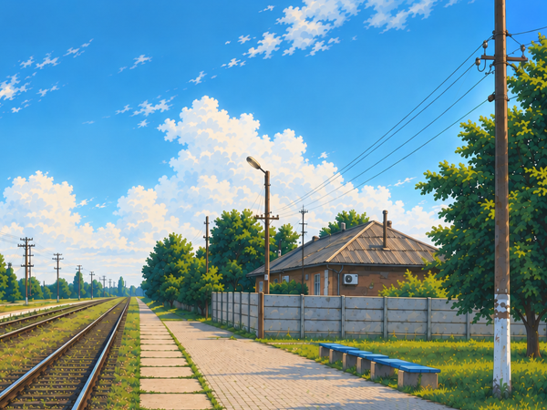
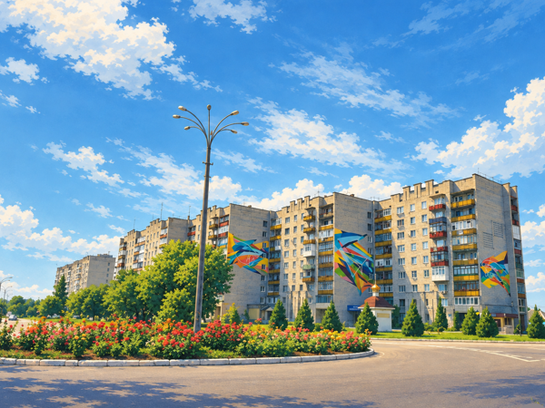
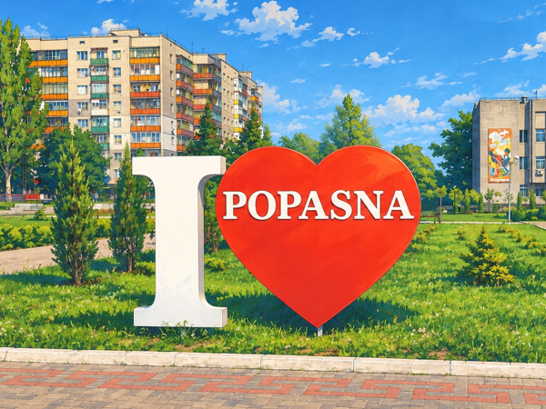
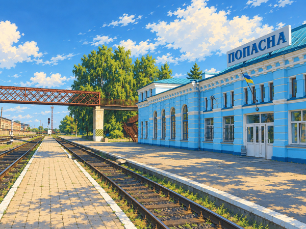

Натисніть на мініатюру, щоб переглянути роботу в повному розмірі.

Зображення ще не додано
Зображення ще не додано Зображення ще не додано
Зображення ще не додано

Зображення ще не додано
Зображення ще не доданоПро галерею
Ця галерея представляє авторські цифрові малюнки та ілюстрації Андрія Ісаченка — українського цифрового художника й аналітика даних. Кожну роботу створено автором цифровими пензлями в таких програмах, як Krita, GIMP та частково з використанням ШІ.
Оберіть мініатюру, щоб відкрити зображення в повному розмірі з назвою, коротким описом, роком, інструментом і авторством.
Поширені запитання
Хто створив роботи в цій галереї?
Усі роботи — авторські цифрові малюнки Андрія Ісаченка, цифрового художника й аналітика даних з України.
У яких програмах створені роботи?
Роботи намальовані цифрово в Krita, Krita і GIMP; використаний інструмент вказано в деталях кожної роботи.
Чи можна використовувати або републікувати зображення?
Роботи захищені авторським правом. Для будь-якого використання, публікації чи замовлення зверніться до автора на пошту або в Telegram.
Як переглянути роботу в повному розмірі?
Натисніть на мініатюру — відкриється вікно з повним зображенням, описом і авторством. Стрілки або свайп — перегляд, Esc — закрити.